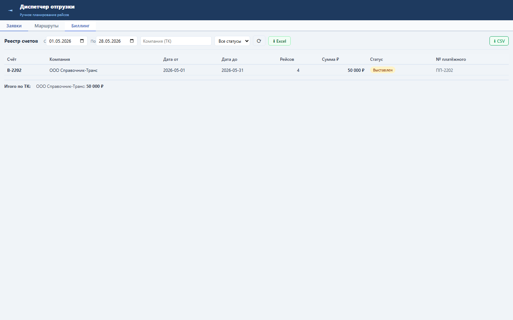
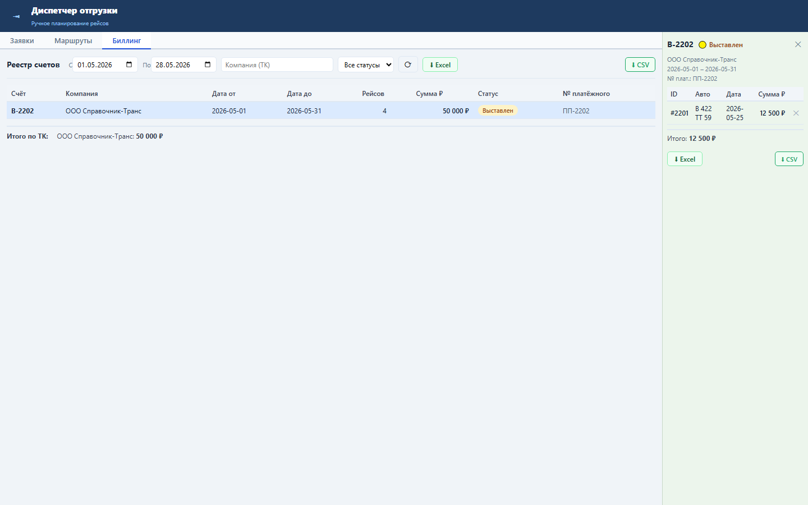
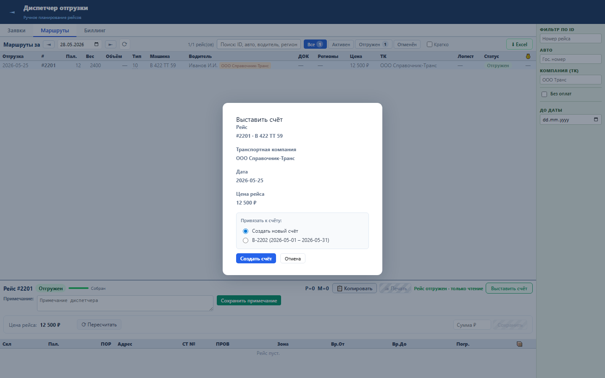

Блок связывает реестр биллинга с Oracle-справочником транспортных компаний и показывает номер платёжного поручения в списке и карточке счёта.
Компании читаются из RRL_BILL_COMPANY, счёт содержит NUM_PLAT и отдаёт его как num_plat.
Оператор быстрее выбирает ТК при выставлении счёта и видит номер платёжного поручения в реестре.



Проверка: functional, UI smoke и load gates пройдены.